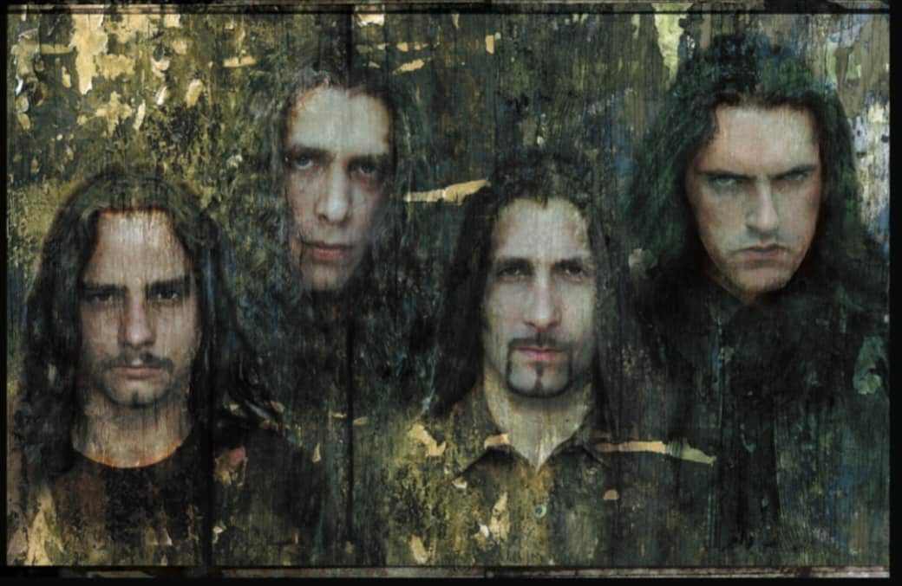
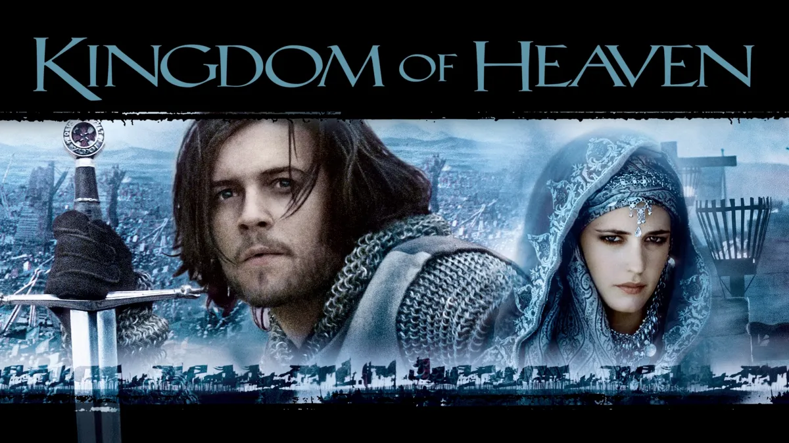

Volledige naam: Lewis Hayden
Adres: 221B Baker Street, Londen
Telefoonnummer: +44 020 555 1234
E-mailadres: lewis.hayden@kaka.com
Type O Negative
Meer info over Type O Negative

Kingdom of Heaven

Ik hou van deze film.
Bekijk Kingdom of Heaven op IMDb
Dark Souls
Officiële site van Dark Souls
Hier zie je mijn voorspelling voor drie vakken en de scores van drie medestudenten.
| Vakken | Lewis (ik) | Student A | Student B | Student C |
|---|---|---|---|---|
| Web Development | 85% | 78% | 92% | 80% |
| Data-analyse | 90% | 85% | 88% | 82% |
| Engels | 88% | 90% | 85% | 87% |